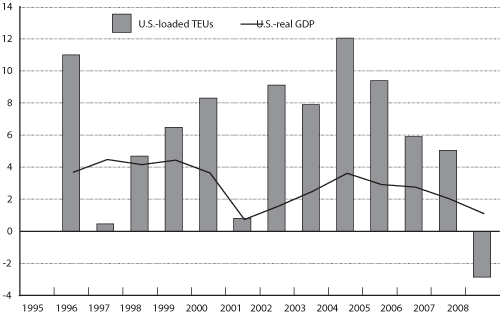

Excel | CSV | Table Version
(Percent)
NOTE: Real GDP growth is measured at seasonally adjusted annual rates based on chained 2000 dollars.
SOURCES: U.S. Department of Transportation, Research and Innovative Technology Administration, Bureau of Transportation Statistics, based on data from Department of Commerce, Bureau of Economic Analysis, National Economic Accounts, National Incomes and Products Account, www.bea.gov/national/nipaweb/index.asp, as of March 14, 2009. TEU data based on data from U.S. Department of Transportation, Maritime Administration, which are drawn from The Journal of Commerce, Port Import Export Reporting Service (PIERS).